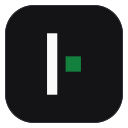

InlineAn ultra-lightweight, on-device typing companion built in C++20. Sub-millisecond typo replacement, context-aware bigram intelligence, and effortless single-key undo directly across all your macOS apps.
Install cleanly in seconds without browser Gatekeeper quarantine warnings.
Install and manage Inline via the official Homebrew Tap. Automatically updates and stays cleanly managed by brew.
For users without Homebrew. Downloads the latest release, places it into /Applications, and launches immediately.
No web views. No heavy models. Instant native speed in C++20.
Native CGEventTap evaluates keystrokes in under 2 microseconds. Unigram dictionary and frequency lookups complete in <100 µs with ~0% idle CPU and minimal RAM footprint.
If Inline corrects a word you intended to keep, simply press Backspace once. It seamlessly reverts the word back to your exact typed input.
Scores candidate words against conversational context using a 240,000+ bigram corpus. "helo" naturally becomes "help" after "need", but "hello" after "say".
Accidentally skip a space while typing quickly? Inline automatically detects and splits fused words (e.g., theclass → the class).
Zero telemetry. No network requests. Volatile ephemeral memory buffer is automatically cleared after 30 seconds of inactivity. Password fields are strictly excluded.
Built-in protection for 180+ internet acronyms (gng, brb, idk, ngl, tbh) and developer keywords (repo, pr, cli, sdk, api, async).
An atomic event pipeline ensuring non-blocking typing and zero dropped keystrokes.